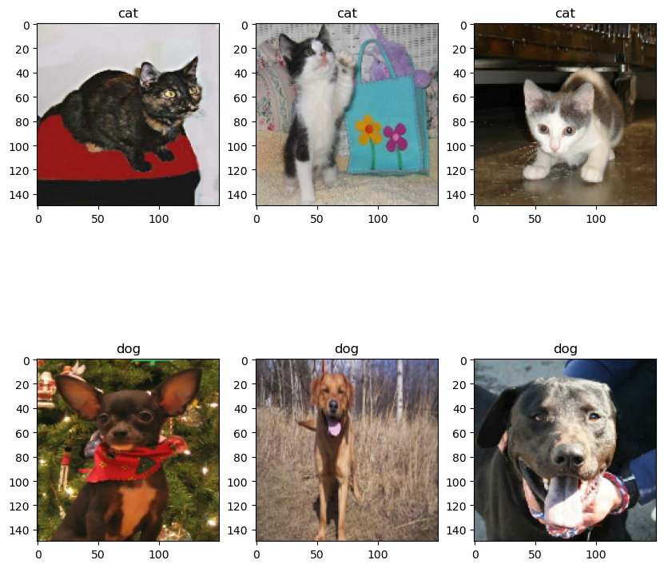
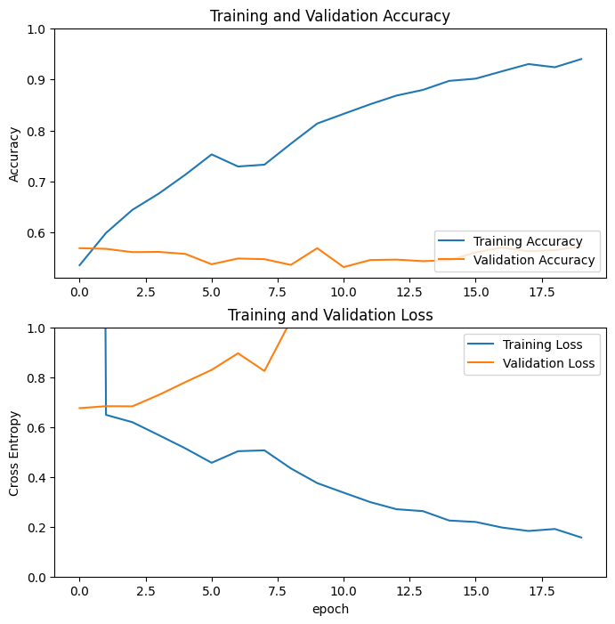
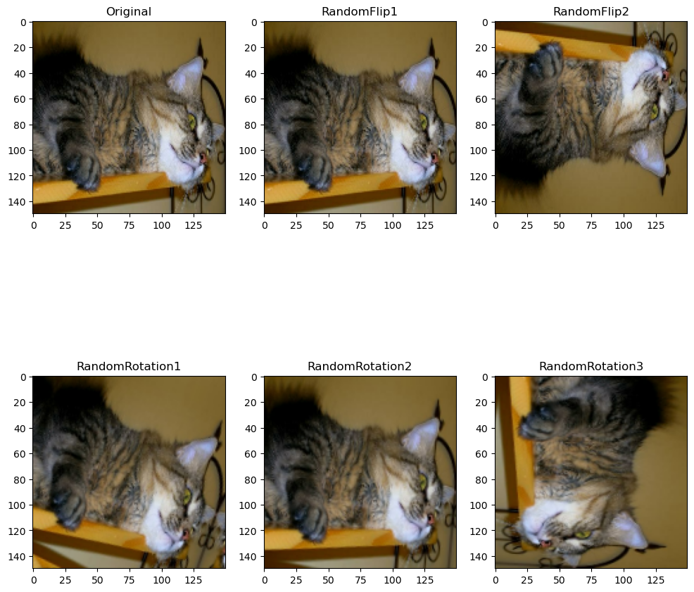
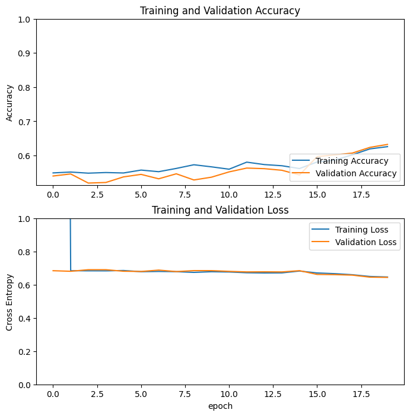
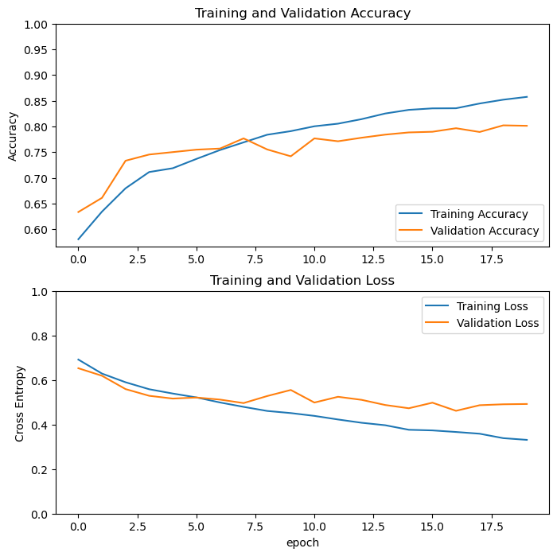
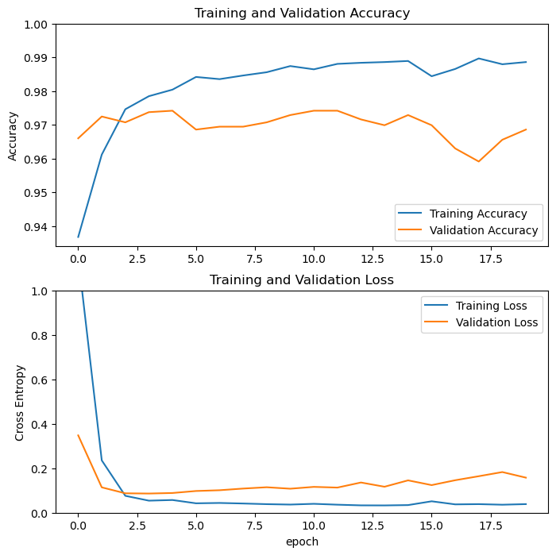

import os
os.environ['KERAS_BACKEND'] = "tensorflow" # actually tensorflow is the default backend.
from keras import utils
import tensorflow_datasets as tfds
import matplotlib.pyplot as plt
import keras
from keras import layers
from random import randintIn this blog post, I’m going to make a super cool machine learning example for image classification. First, we need to set up our package and environment. In this example, we will use keras and a dataset from tensor flow dataset called cats vs dogs which we need to classify the two animals based on pictures.
In this step, we need to split train test and validation data.
train_ds, validation_ds, test_ds = tfds.load(
"cats_vs_dogs",
# 40% for training, 10% for validation, and 10% for test (the rest unused)
split=["train[:40%]", "train[40%:50%]", "train[50%:60%]"],
as_supervised=True, # Include labels
)
print(f"Number of training samples: {train_ds.cardinality()}")
print(f"Number of validation samples: {validation_ds.cardinality()}")
print(f"Number of test samples: {test_ds.cardinality()}")Number of training samples: 9305
Number of validation samples: 2326
Number of test samples: 2326In this step, we are resizing all the pictures into 150x150, and batch our datasets with batch(batch_size), prefetch(tf_data.AUTOTUNE) and cache() to reduce our run time.
resize_fn = keras.layers.Resizing(150, 150)
train_ds = train_ds.map(lambda x, y: (resize_fn(x), y))
validation_ds = validation_ds.map(lambda x, y: (resize_fn(x), y))
test_ds = test_ds.map(lambda x, y: (resize_fn(x), y))from tensorflow import data as tf_data
batch_size = 64
train_ds = train_ds.batch(batch_size).prefetch(tf_data.AUTOTUNE).cache()
validation_ds = validation_ds.batch(batch_size).prefetch(tf_data.AUTOTUNE).cache()
test_ds = test_ds.batch(batch_size).prefetch(tf_data.AUTOTUNE).cache()Then, we define a show(ds) function that takes our datasets to show three random dog and cats.
class_names = ['cat', 'dog']
def show(ds):
"""
imput a batch of cat and dog pictures, and show three random cat and dogs
utilizing randint(0, 63) to get a random picture everytime
"""
plt.figure(figsize=(10, 10))
for images, labels in ds.take(1): # take(1) will get a single picture
count = 0
j = 0
while j < 3:
i = randint(0, 63)
if labels[i] == 0: # make sure we get a cat to display
ax = plt.subplot(2, 3, j+1)
plt.imshow(images[i].numpy().astype("uint8"))
plt.title(class_names[labels[i]])
j += 1 # add one iteration to make sure we only display three pictures for each
else:
continue
count = 0
j = 0
while j < 3:
i = randint(0, 63)
if labels[i] == 1: # make sure we get a dog to display
ax = plt.subplot(2, 3, j+4)
plt.imshow(images[i].numpy().astype("uint8"))
plt.title(class_names[labels[i]])
j += 1 # add one iteration to make sure we only display three pictures for each
else:
continueshow(train_ds)2024-03-02 19:48:39.796322: W tensorflow/core/kernels/data/cache_dataset_ops.cc:858] The calling iterator did not fully read the dataset being cached. In order to avoid unexpected truncation of the dataset, the partially cached contents of the dataset will be discarded. This can happen if you have an input pipeline similar to `dataset.cache().take(k).repeat()`. You should use `dataset.take(k).cache().repeat()` instead.
We utilize as_numpy_iterator() and for loop to output the number of cats and dogs to calculate a baseline accuracy based on proportion.
labels_iterator = train_ds.unbatch().map(lambda image, label: label).as_numpy_iterator()cat = 0
dog = 0
test_labels = []
test_images = []
for i in labels_iterator: # with each iteration to take one label and add counts to each number
test_labels.append(i)
if i == 0:
cat += 1
else:
dog += 1
print(cat, dog)4637 4668print("baseline accuracy is", dog/(cat+dog)) # our default accuracy is the more labels counts divide by all label countsbaseline accuracy is 0.5016657710908113Basic Model 1
First, we use Dropout to drop 0.2 amount of data everytime before training for randomized event. Then, we can utilize Conv2D and MaxPooling2D layers to reduce the size of features for learning. Afterwards, we Flatten and Dense our features to the size of number of class.
model1 = keras.models.Sequential([
layers.Input((150, 150, 3)), # input 150, 150, 3
layers.Dropout(0.2), # drop random 20% to randomize each training
layers.Conv2D(64, (3, 3), activation='relu'), # conv2d to reduce amount of features
layers.MaxPooling2D((2, 2)), # condense amount of features
layers.Conv2D(64, (3, 3), activation='relu'),
layers.MaxPooling2D((2, 2)),
layers.Conv2D(64, (3, 3), activation='relu'),
layers.Flatten(), # flat all features into 1d
layers.Dense(64, activation='relu'), # dense features before the final dense
layers.Dense(2) # number of classes
])
model1.summary()Model: "sequential"
_________________________________________________________________
Layer (type) Output Shape Param #
=================================================================
dropout (Dropout) (None, 150, 150, 3) 0
conv2d (Conv2D) (None, 148, 148, 64) 1792
max_pooling2d (MaxPooling2 (None, 74, 74, 64) 0
D)
conv2d_1 (Conv2D) (None, 72, 72, 64) 36928
max_pooling2d_1 (MaxPoolin (None, 36, 36, 64) 0
g2D)
conv2d_2 (Conv2D) (None, 34, 34, 64) 36928
flatten (Flatten) (None, 73984) 0
dense (Dense) (None, 64) 4735040
dense_1 (Dense) (None, 2) 130
=================================================================
Total params: 4810818 (18.35 MB)
Trainable params: 4810818 (18.35 MB)
Non-trainable params: 0 (0.00 Byte)
_________________________________________________________________model1.compile(optimizer='adam',
loss=keras.losses.SparseCategoricalCrossentropy(from_logits=True),
metrics=['accuracy'])
history1 = model1.fit(train_ds,
epochs=20,
validation_data=validation_ds)Epoch 1/20
146/146 ━━━━━━━━━━━━━━━━━━━━ 11s 63ms/step - accuracy: 0.5159 - loss: 76.1365 - val_accuracy: 0.5696 - val_loss: 0.6758
Epoch 2/20
146/146 ━━━━━━━━━━━━━━━━━━━━ 8s 53ms/step - accuracy: 0.5825 - loss: 0.6631 - val_accuracy: 0.5684 - val_loss: 0.6837
Epoch 3/20
146/146 ━━━━━━━━━━━━━━━━━━━━ 8s 54ms/step - accuracy: 0.6374 - loss: 0.6212 - val_accuracy: 0.5619 - val_loss: 0.6831
Epoch 4/20
146/146 ━━━━━━━━━━━━━━━━━━━━ 8s 54ms/step - accuracy: 0.6731 - loss: 0.5693 - val_accuracy: 0.5623 - val_loss: 0.7289
Epoch 5/20
146/146 ━━━━━━━━━━━━━━━━━━━━ 11s 74ms/step - accuracy: 0.6965 - loss: 0.5291 - val_accuracy: 0.5585 - val_loss: 0.7798
Epoch 6/20
146/146 ━━━━━━━━━━━━━━━━━━━━ 11s 74ms/step - accuracy: 0.7303 - loss: 0.4808 - val_accuracy: 0.5383 - val_loss: 0.8293
Epoch 7/20
146/146 ━━━━━━━━━━━━━━━━━━━━ 8s 54ms/step - accuracy: 0.6968 - loss: 0.5329 - val_accuracy: 0.5494 - val_loss: 0.8959
Epoch 8/20
146/146 ━━━━━━━━━━━━━━━━━━━━ 8s 54ms/step - accuracy: 0.7210 - loss: 0.5069 - val_accuracy: 0.5482 - val_loss: 0.8249
Epoch 9/20
146/146 ━━━━━━━━━━━━━━━━━━━━ 11s 74ms/step - accuracy: 0.7247 - loss: 0.5064 - val_accuracy: 0.5370 - val_loss: 1.0278
Epoch 10/20
146/146 ━━━━━━━━━━━━━━━━━━━━ 8s 53ms/step - accuracy: 0.7753 - loss: 0.4601 - val_accuracy: 0.5696 - val_loss: 1.0642
Epoch 11/20
146/146 ━━━━━━━━━━━━━━━━━━━━ 8s 54ms/step - accuracy: 0.8312 - loss: 0.3351 - val_accuracy: 0.5327 - val_loss: 1.2938
Epoch 12/20
146/146 ━━━━━━━━━━━━━━━━━━━━ 8s 53ms/step - accuracy: 0.8702 - loss: 0.2647 - val_accuracy: 0.5464 - val_loss: 1.2194
Epoch 13/20
146/146 ━━━━━━━━━━━━━━━━━━━━ 11s 74ms/step - accuracy: 0.8606 - loss: 0.2829 - val_accuracy: 0.5473 - val_loss: 1.3734
Epoch 14/20
146/146 ━━━━━━━━━━━━━━━━━━━━ 8s 55ms/step - accuracy: 0.8708 - loss: 0.2841 - val_accuracy: 0.5443 - val_loss: 1.4037
Epoch 15/20
146/146 ━━━━━━━━━━━━━━━━━━━━ 11s 74ms/step - accuracy: 0.8942 - loss: 0.2424 - val_accuracy: 0.5460 - val_loss: 1.5973
Epoch 16/20
146/146 ━━━━━━━━━━━━━━━━━━━━ 11s 74ms/step - accuracy: 0.9099 - loss: 0.2066 - val_accuracy: 0.5615 - val_loss: 1.5195
Epoch 17/20
146/146 ━━━━━━━━━━━━━━━━━━━━ 8s 53ms/step - accuracy: 0.9230 - loss: 0.1856 - val_accuracy: 0.5709 - val_loss: 1.5209
Epoch 18/20
146/146 ━━━━━━━━━━━━━━━━━━━━ 11s 74ms/step - accuracy: 0.9338 - loss: 0.1692 - val_accuracy: 0.5636 - val_loss: 1.6108
Epoch 19/20
146/146 ━━━━━━━━━━━━━━━━━━━━ 8s 53ms/step - accuracy: 0.9346 - loss: 0.1631 - val_accuracy: 0.5658 - val_loss: 1.3993
Epoch 20/20
146/146 ━━━━━━━━━━━━━━━━━━━━ 8s 53ms/step - accuracy: 0.9485 - loss: 0.1382 - val_accuracy: 0.5731 - val_loss: 1.5646We utilizing plot to show us accuracy and loss for training and validation graph.
def plot_history(history):
acc = history.history['accuracy']
val_acc = history.history['val_accuracy']
loss = history.history['loss']
val_loss = history.history['val_loss']
plt.figure(figsize=(8, 8))
plt.subplot(2, 1, 1)
plt.plot(acc, label='Training Accuracy')
plt.plot(val_acc, label='Validation Accuracy')
plt.legend(loc='lower right')
plt.ylabel('Accuracy')
plt.ylim([min(plt.ylim()),1])
plt.title('Training and Validation Accuracy')
plt.subplot(2, 1, 2)
plt.plot(loss, label='Training Loss')
plt.plot(val_loss, label='Validation Loss')
plt.legend(loc='upper right')
plt.ylabel('Cross Entropy')
plt.ylim([0,1.0])
plt.title('Training and Validation Loss')
plt.xlabel('epoch')
plt.show()plot_history(history1)
- The accuracy of model1 stabilized between 55% and 60% during training.
- Compare that to the baseline, this model is 5-10 percent better.
- I observe a little overfitting at the end since the val accuracy dropped a little.
3. Model 2
We can add Randomflip and RandomRotation after input, I use horizontal flip since utilizing vertical flip will yield worse result and also use random rotation factor with 0.1 pi.
Let’s see an example before implement it into model2.
plt.figure(figsize=(12, 12))
for images, labels in train_ds.take(1):
ax = plt.subplot(2, 3, 1)
plt.imshow(images[3].numpy().astype("uint8"))
plt.title('Original')
layer1 = layers.RandomFlip() # random flip layer
layer2 = layers.RandomRotation(factor = 0.1) # random rotaion layer 1
layer3 = layers.RandomRotation(factor = 0.3) # random rotation layer 2
# we then output pictures through these layer for image[3] a cute cat picture
ax = plt.subplot(2, 3, 2)
plt.imshow(layer1(images[3].numpy().astype("uint8")).numpy().astype("uint8"))
plt.title('RandomFlip1')
ax = plt.subplot(2, 3, 3)
plt.imshow(layer1(images[3].numpy().astype("uint8")).numpy().astype("uint8"))
plt.title('RandomFlip2')
ax = plt.subplot(2, 3, 4)
plt.imshow(layer2(images[3].numpy().astype("uint8")).numpy().astype("uint8"))
plt.title('RandomRotation1')
ax = plt.subplot(2, 3, 5)
plt.imshow(layer2(images[3].numpy().astype("uint8")).numpy().astype("uint8"))
plt.title('RandomRotation2')
ax = plt.subplot(2, 3, 6)
plt.imshow(layer3(images[3].numpy().astype("uint8")).numpy().astype("uint8"))
plt.title('RandomRotation3')Text(0.5, 1.0, 'RandomRotation3')
Then, we can implement it into the model’s layer.
model2 = keras.models.Sequential([
layers.Input((150, 150, 3)),
layers.RandomFlip(mode = 'horizontal'), # flip random images for horizontal direction
layers.RandomRotation(factor = 0.1), # rotate random image for (-0.1pi) or (0.1pi)
layers.Dropout(0.2),
layers.Conv2D(64, (3, 3), activation='relu'),
layers.MaxPooling2D((2, 2)),
layers.Conv2D(64, (3, 3), activation='relu'),
layers.MaxPooling2D((2, 2)),
layers.Conv2D(64, (3, 3), activation='relu'),
layers.Flatten(),
layers.Dense(64, activation='relu'),
layers.Dense(2) # number of classes
])
model2.summary()Model: "sequential_7"
┏━━━━━━━━━━━━━━━━━━━━━━━━━━━━━━━━━━━━━━┳━━━━━━━━━━━━━━━━━━━━━━━━━━━━━┳━━━━━━━━━━━━━━━━━┓ ┃ Layer (type) ┃ Output Shape ┃ Param # ┃ ┡━━━━━━━━━━━━━━━━━━━━━━━━━━━━━━━━━━━━━━╇━━━━━━━━━━━━━━━━━━━━━━━━━━━━━╇━━━━━━━━━━━━━━━━━┩ │ random_flip_3 (RandomFlip) │ (None, 150, 150, 3) │ 0 │ ├──────────────────────────────────────┼─────────────────────────────┼─────────────────┤ │ random_rotation_3 (RandomRotation) │ (None, 150, 150, 3) │ 0 │ ├──────────────────────────────────────┼─────────────────────────────┼─────────────────┤ │ dropout_7 (Dropout) │ (None, 150, 150, 3) │ 0 │ ├──────────────────────────────────────┼─────────────────────────────┼─────────────────┤ │ conv2d_21 (Conv2D) │ (None, 148, 148, 64) │ 1,792 │ ├──────────────────────────────────────┼─────────────────────────────┼─────────────────┤ │ max_pooling2d_14 (MaxPooling2D) │ (None, 74, 74, 64) │ 0 │ ├──────────────────────────────────────┼─────────────────────────────┼─────────────────┤ │ conv2d_22 (Conv2D) │ (None, 72, 72, 64) │ 36,928 │ ├──────────────────────────────────────┼─────────────────────────────┼─────────────────┤ │ max_pooling2d_15 (MaxPooling2D) │ (None, 36, 36, 64) │ 0 │ ├──────────────────────────────────────┼─────────────────────────────┼─────────────────┤ │ conv2d_23 (Conv2D) │ (None, 34, 34, 64) │ 36,928 │ ├──────────────────────────────────────┼─────────────────────────────┼─────────────────┤ │ flatten_7 (Flatten) │ (None, 73984) │ 0 │ ├──────────────────────────────────────┼─────────────────────────────┼─────────────────┤ │ dense_14 (Dense) │ (None, 64) │ 4,735,040 │ ├──────────────────────────────────────┼─────────────────────────────┼─────────────────┤ │ dense_15 (Dense) │ (None, 2) │ 130 │ └──────────────────────────────────────┴─────────────────────────────┴─────────────────┘
Total params: 4,810,818 (18.35 MB)
Trainable params: 4,810,818 (18.35 MB)
Non-trainable params: 0 (0.00 B)
model2.compile(optimizer='adam',
loss=keras.losses.SparseCategoricalCrossentropy(from_logits=True),
metrics=['accuracy'])
history2 = model2.fit(train_ds,
epochs=20,
validation_data=validation_ds)Epoch 1/20
146/146 ━━━━━━━━━━━━━━━━━━━━ 42s 290ms/step - accuracy: 0.5360 - loss: 72.9558 - val_accuracy: 0.5400 - val_loss: 0.6841
Epoch 2/20
146/146 ━━━━━━━━━━━━━━━━━━━━ 43s 292ms/step - accuracy: 0.5446 - loss: 0.6838 - val_accuracy: 0.5460 - val_loss: 0.6807
Epoch 3/20
146/146 ━━━━━━━━━━━━━━━━━━━━ 35s 237ms/step - accuracy: 0.5495 - loss: 0.6803 - val_accuracy: 0.5193 - val_loss: 0.6901
Epoch 4/20
146/146 ━━━━━━━━━━━━━━━━━━━━ 42s 290ms/step - accuracy: 0.5389 - loss: 0.6837 - val_accuracy: 0.5211 - val_loss: 0.6901
Epoch 5/20
146/146 ━━━━━━━━━━━━━━━━━━━━ 44s 300ms/step - accuracy: 0.5454 - loss: 0.6851 - val_accuracy: 0.5374 - val_loss: 0.6809
Epoch 6/20
146/146 ━━━━━━━━━━━━━━━━━━━━ 42s 290ms/step - accuracy: 0.5509 - loss: 0.6786 - val_accuracy: 0.5447 - val_loss: 0.6795
Epoch 7/20
146/146 ━━━━━━━━━━━━━━━━━━━━ 42s 290ms/step - accuracy: 0.5447 - loss: 0.6778 - val_accuracy: 0.5318 - val_loss: 0.6878
Epoch 8/20
146/146 ━━━━━━━━━━━━━━━━━━━━ 35s 238ms/step - accuracy: 0.5496 - loss: 0.6792 - val_accuracy: 0.5464 - val_loss: 0.6788
Epoch 9/20
146/146 ━━━━━━━━━━━━━━━━━━━━ 35s 238ms/step - accuracy: 0.5655 - loss: 0.6768 - val_accuracy: 0.5284 - val_loss: 0.6847
Epoch 10/20
146/146 ━━━━━━━━━━━━━━━━━━━━ 35s 236ms/step - accuracy: 0.5700 - loss: 0.6767 - val_accuracy: 0.5365 - val_loss: 0.6845
Epoch 11/20
146/146 ━━━━━━━━━━━━━━━━━━━━ 42s 290ms/step - accuracy: 0.5496 - loss: 0.6767 - val_accuracy: 0.5520 - val_loss: 0.6802
Epoch 12/20
146/146 ━━━━━━━━━━━━━━━━━━━━ 35s 239ms/step - accuracy: 0.5675 - loss: 0.6766 - val_accuracy: 0.5632 - val_loss: 0.6769
Epoch 13/20
146/146 ━━━━━━━━━━━━━━━━━━━━ 35s 239ms/step - accuracy: 0.5655 - loss: 0.6693 - val_accuracy: 0.5615 - val_loss: 0.6774
Epoch 14/20
146/146 ━━━━━━━━━━━━━━━━━━━━ 34s 236ms/step - accuracy: 0.5613 - loss: 0.6718 - val_accuracy: 0.5567 - val_loss: 0.6768
Epoch 15/20
146/146 ━━━━━━━━━━━━━━━━━━━━ 35s 236ms/step - accuracy: 0.5574 - loss: 0.6788 - val_accuracy: 0.5430 - val_loss: 0.6843
Epoch 16/20
146/146 ━━━━━━━━━━━━━━━━━━━━ 42s 290ms/step - accuracy: 0.5640 - loss: 0.6770 - val_accuracy: 0.5967 - val_loss: 0.6618
Epoch 17/20
146/146 ━━━━━━━━━━━━━━━━━━━━ 35s 237ms/step - accuracy: 0.5720 - loss: 0.6664 - val_accuracy: 0.6019 - val_loss: 0.6606
Epoch 18/20
146/146 ━━━━━━━━━━━━━━━━━━━━ 42s 290ms/step - accuracy: 0.5999 - loss: 0.6596 - val_accuracy: 0.6071 - val_loss: 0.6574
Epoch 19/20
146/146 ━━━━━━━━━━━━━━━━━━━━ 42s 290ms/step - accuracy: 0.6149 - loss: 0.6486 - val_accuracy: 0.6238 - val_loss: 0.6453
Epoch 20/20
146/146 ━━━━━━━━━━━━━━━━━━━━ 42s 290ms/step - accuracy: 0.6232 - loss: 0.6408 - val_accuracy: 0.6324 - val_loss: 0.6439plot_history(history2)
- The accuracy of model2 stabilized slightly above 60% during training.
- Compare that to the baseline, this model is 10 percent better.
- I didn’t observe overfitting since the val accuracy kept increasing.
4. Model 3
In this iteration of the model, we added a layer of preprocessor for standardization after input.
i = keras.Input(shape=(150, 150, 3))
# The pixel values have the range of (0, 255), but many models will work better if rescaled to (-1, 1.)
# outputs: `(inputs * scale) + offset`
scale_layer = keras.layers.Rescaling(scale=1 / 127.5, offset=-1)
x = scale_layer(i)
preprocessor = keras.Model(inputs = i, outputs = x)model3 = keras.models.Sequential([
layers.Input((150, 150, 3)),
preprocessor, # add preprocessor to standardize after input
layers.RandomFlip(mode = 'horizontal'),
layers.RandomRotation(factor = 0.1),
layers.Dropout(0.2),
layers.Conv2D(64, (3, 3), activation='relu'),
layers.MaxPooling2D((2, 2)),
layers.Conv2D(64, (3, 3), activation='relu'),
layers.MaxPooling2D((2, 2)),
layers.Conv2D(64, (3, 3), activation='relu'),
layers.Flatten(),
layers.Dense(64, activation='relu'),
layers.Dense(2) # number of classes
])
model3.summary()Model: "sequential_1"
_________________________________________________________________
Layer (type) Output Shape Param #
=================================================================
model (Functional) (None, 150, 150, 3) 0
random_flip (RandomFlip) (None, 150, 150, 3) 0
random_rotation (RandomRot (None, 150, 150, 3) 0
ation)
dropout_1 (Dropout) (None, 150, 150, 3) 0
conv2d_3 (Conv2D) (None, 148, 148, 64) 1792
max_pooling2d_2 (MaxPoolin (None, 74, 74, 64) 0
g2D)
conv2d_4 (Conv2D) (None, 72, 72, 64) 36928
max_pooling2d_3 (MaxPoolin (None, 36, 36, 64) 0
g2D)
conv2d_5 (Conv2D) (None, 34, 34, 64) 36928
flatten_1 (Flatten) (None, 73984) 0
dense_2 (Dense) (None, 64) 4735040
dense_3 (Dense) (None, 2) 130
=================================================================
Total params: 4810818 (18.35 MB)
Trainable params: 4810818 (18.35 MB)
Non-trainable params: 0 (0.00 Byte)
_________________________________________________________________model3.compile(optimizer='adam',
loss=keras.losses.SparseCategoricalCrossentropy(from_logits=True),
metrics=['accuracy'])
history3 = model3.fit(train_ds,
epochs=20,
validation_data=validation_ds)Epoch 1/20
146/146 [==============================] - 122s 829ms/step - loss: 0.6917 - accuracy: 0.5808 - val_loss: 0.6528 - val_accuracy: 0.6337
Epoch 2/20
146/146 [==============================] - 651s 4s/step - loss: 0.6289 - accuracy: 0.6344 - val_loss: 0.6190 - val_accuracy: 0.6612
Epoch 3/20
146/146 [==============================] - 107s 730ms/step - loss: 0.5899 - accuracy: 0.6798 - val_loss: 0.5592 - val_accuracy: 0.7334
Epoch 4/20
146/146 [==============================] - 103s 704ms/step - loss: 0.5586 - accuracy: 0.7114 - val_loss: 0.5291 - val_accuracy: 0.7455
Epoch 5/20
146/146 [==============================] - 105s 719ms/step - loss: 0.5392 - accuracy: 0.7189 - val_loss: 0.5165 - val_accuracy: 0.7502
Epoch 6/20
146/146 [==============================] - 109s 743ms/step - loss: 0.5218 - accuracy: 0.7369 - val_loss: 0.5213 - val_accuracy: 0.7549
Epoch 7/20
146/146 [==============================] - 110s 755ms/step - loss: 0.4991 - accuracy: 0.7542 - val_loss: 0.5120 - val_accuracy: 0.7571
Epoch 8/20
146/146 [==============================] - 114s 777ms/step - loss: 0.4793 - accuracy: 0.7692 - val_loss: 0.4963 - val_accuracy: 0.7769
Epoch 9/20
146/146 [==============================] - 119s 818ms/step - loss: 0.4610 - accuracy: 0.7840 - val_loss: 0.5279 - val_accuracy: 0.7554
Epoch 10/20
146/146 [==============================] - 107s 729ms/step - loss: 0.4514 - accuracy: 0.7910 - val_loss: 0.5552 - val_accuracy: 0.7420
Epoch 11/20
146/146 [==============================] - 105s 718ms/step - loss: 0.4388 - accuracy: 0.8004 - val_loss: 0.4987 - val_accuracy: 0.7769
Epoch 12/20
146/146 [==============================] - 105s 721ms/step - loss: 0.4227 - accuracy: 0.8055 - val_loss: 0.5246 - val_accuracy: 0.7713
Epoch 13/20
146/146 [==============================] - 107s 730ms/step - loss: 0.4079 - accuracy: 0.8143 - val_loss: 0.5109 - val_accuracy: 0.7782
Epoch 14/20
146/146 [==============================] - 107s 731ms/step - loss: 0.3969 - accuracy: 0.8253 - val_loss: 0.4877 - val_accuracy: 0.7842
Epoch 15/20
146/146 [==============================] - 108s 738ms/step - loss: 0.3765 - accuracy: 0.8323 - val_loss: 0.4731 - val_accuracy: 0.7885
Epoch 16/20
146/146 [==============================] - 108s 736ms/step - loss: 0.3737 - accuracy: 0.8352 - val_loss: 0.4981 - val_accuracy: 0.7898
Epoch 17/20
146/146 [==============================] - 107s 731ms/step - loss: 0.3666 - accuracy: 0.8355 - val_loss: 0.4616 - val_accuracy: 0.7966
Epoch 18/20
146/146 [==============================] - 105s 721ms/step - loss: 0.3588 - accuracy: 0.8447 - val_loss: 0.4868 - val_accuracy: 0.7893
Epoch 19/20
146/146 [==============================] - 110s 753ms/step - loss: 0.3389 - accuracy: 0.8521 - val_loss: 0.4909 - val_accuracy: 0.8022
Epoch 20/20
146/146 [==============================] - 111s 760ms/step - loss: 0.3312 - accuracy: 0.8576 - val_loss: 0.4923 - val_accuracy: 0.8014plot_history(history3)
- The accuracy of model3 stabilized between 85% and 86% during training.
- Compare that to the baseline, this model is about 35 percent better.
- I observe a little overfitting at the end since the val accuracy dropped a little.
5. Model 4
We are utilizing a exisiting base model MobileNetV3Large as a layer, and then we delete our preprocess layer since MobileNetV3Large already contains it.
IMG_SHAPE = (150, 150, 3)
base_model = keras.applications.MobileNetV3Large(input_shape=IMG_SHAPE,
include_top=False,
weights='imagenet')
base_model.trainable = False
i = keras.Input(shape=IMG_SHAPE)
x = base_model(i, training = False)
base_model_layer = keras.Model(inputs = i, outputs = x)WARNING:tensorflow:`input_shape` is undefined or non-square, or `rows` is not 224. Weights for input shape (224, 224) will be loaded as the default.WARNING:tensorflow:`input_shape` is undefined or non-square, or `rows` is not 224. Weights for input shape (224, 224) will be loaded as the default.model4 = keras.models.Sequential([
layers.Input((150, 150, 3)),
layers.RandomFlip(mode = 'horizontal'),
layers.RandomRotation(factor = 0.1),
base_model_layer, # add base model layer
layers.Flatten(),
layers.Dense(64),
layers.Dense(2) # number of classes
])
model4.summary()Model: "sequential"
_________________________________________________________________
Layer (type) Output Shape Param #
=================================================================
random_flip_1 (RandomFlip) (None, 150, 150, 3) 0
random_rotation_1 (RandomR (None, 150, 150, 3) 0
otation)
model (Functional) (None, 5, 5, 960) 2996352
flatten (Flatten) (None, 24000) 0
dense (Dense) (None, 64) 1536064
dense_1 (Dense) (None, 2) 130
=================================================================
Total params: 4532546 (17.29 MB)
Trainable params: 1536194 (5.86 MB)
Non-trainable params: 2996352 (11.43 MB)
_________________________________________________________________model4.compile(optimizer='adam',
loss=keras.losses.SparseCategoricalCrossentropy(from_logits=True),
metrics=['accuracy'])
history4 = model4.fit(train_ds,
epochs=20,
validation_data=validation_ds)Epoch 1/20
146/146 [==============================] - 38s 245ms/step - loss: 1.1496 - accuracy: 0.9368 - val_loss: 0.3478 - val_accuracy: 0.9660
Epoch 2/20
146/146 [==============================] - 32s 220ms/step - loss: 0.2353 - accuracy: 0.9612 - val_loss: 0.1140 - val_accuracy: 0.9725
Epoch 3/20
146/146 [==============================] - 33s 225ms/step - loss: 0.0759 - accuracy: 0.9746 - val_loss: 0.0872 - val_accuracy: 0.9708
Epoch 4/20
146/146 [==============================] - 33s 226ms/step - loss: 0.0542 - accuracy: 0.9785 - val_loss: 0.0862 - val_accuracy: 0.9738
Epoch 5/20
146/146 [==============================] - 33s 229ms/step - loss: 0.0571 - accuracy: 0.9804 - val_loss: 0.0886 - val_accuracy: 0.9742
Epoch 6/20
146/146 [==============================] - 34s 232ms/step - loss: 0.0423 - accuracy: 0.9842 - val_loss: 0.0976 - val_accuracy: 0.9686
Epoch 7/20
146/146 [==============================] - 34s 233ms/step - loss: 0.0438 - accuracy: 0.9836 - val_loss: 0.1011 - val_accuracy: 0.9695
Epoch 8/20
146/146 [==============================] - 34s 235ms/step - loss: 0.0414 - accuracy: 0.9846 - val_loss: 0.1086 - val_accuracy: 0.9695
Epoch 9/20
146/146 [==============================] - 35s 240ms/step - loss: 0.0384 - accuracy: 0.9856 - val_loss: 0.1145 - val_accuracy: 0.9708
Epoch 10/20
146/146 [==============================] - 34s 236ms/step - loss: 0.0366 - accuracy: 0.9874 - val_loss: 0.1079 - val_accuracy: 0.9729
Epoch 11/20
146/146 [==============================] - 35s 238ms/step - loss: 0.0400 - accuracy: 0.9865 - val_loss: 0.1161 - val_accuracy: 0.9742
Epoch 12/20
146/146 [==============================] - 35s 241ms/step - loss: 0.0360 - accuracy: 0.9881 - val_loss: 0.1130 - val_accuracy: 0.9742
Epoch 13/20
146/146 [==============================] - 35s 242ms/step - loss: 0.0330 - accuracy: 0.9884 - val_loss: 0.1358 - val_accuracy: 0.9716
Epoch 14/20
146/146 [==============================] - 36s 244ms/step - loss: 0.0327 - accuracy: 0.9886 - val_loss: 0.1168 - val_accuracy: 0.9699
Epoch 15/20
146/146 [==============================] - 35s 237ms/step - loss: 0.0343 - accuracy: 0.9889 - val_loss: 0.1455 - val_accuracy: 0.9729
Epoch 16/20
146/146 [==============================] - 36s 244ms/step - loss: 0.0513 - accuracy: 0.9844 - val_loss: 0.1241 - val_accuracy: 0.9699
Epoch 17/20
146/146 [==============================] - 35s 243ms/step - loss: 0.0375 - accuracy: 0.9866 - val_loss: 0.1460 - val_accuracy: 0.9630
Epoch 18/20
146/146 [==============================] - 34s 236ms/step - loss: 0.0385 - accuracy: 0.9897 - val_loss: 0.1641 - val_accuracy: 0.9592
Epoch 19/20
146/146 [==============================] - 36s 244ms/step - loss: 0.0359 - accuracy: 0.9880 - val_loss: 0.1828 - val_accuracy: 0.9656
Epoch 20/20
146/146 [==============================] - 38s 260ms/step - loss: 0.0386 - accuracy: 0.9886 - val_loss: 0.1577 - val_accuracy: 0.9686plot_history(history4)
- The accuracy of model4 stabilized between 96% and 98% during training.
- Compare that to the baseline, this model is about 46 percent better.
- I observe a lot overfitting at the end since the val accuracy drops and increase after epoch 3.
6. Tests
Lets test our best performing model4 on our unseen test_ds!
results = model4.evaluate(test_ds)
print(f'Test loss is {results[0]}, test accuracy is {results[1]}')37/37 [==============================] - 6s 164ms/step - loss: 0.1822 - accuracy: 0.9656
Test loss is 0.1821718066930771, test accuracy is 0.9656062126159668The last test accuracy is about 96.56%, and this looks pretty good!